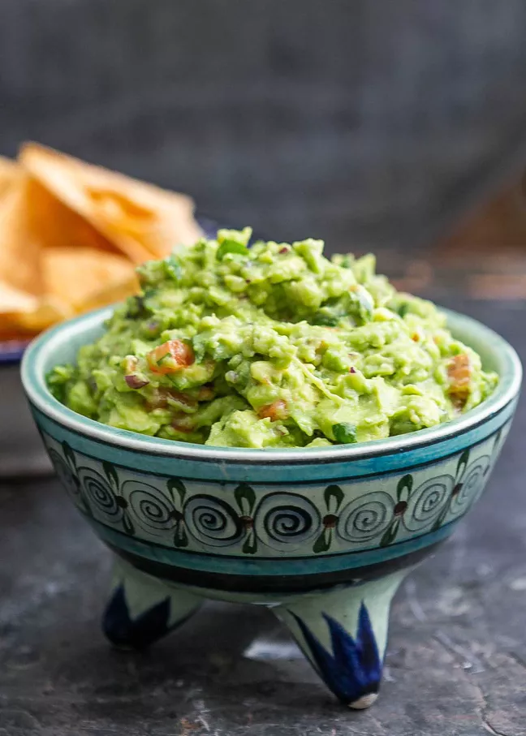

Guacamole

Description
Need something to go along with those delicious chips? Try this flavorful and simple guacamole
Ingredients
- Avocados (hopefully they're just right)
- A small proportion of diced white onion
- chopped Tomatoes (not too much! your not making salsa here
- Coarse salt
- Lime
- Finely diced cilantro
Steps
- Mash peeled avocados in a bowl with cilantro, onions and tomatoes
- Squeeze a bit of lime on after you've reached your desired consistency
- sprinkle with salt and enjoy!